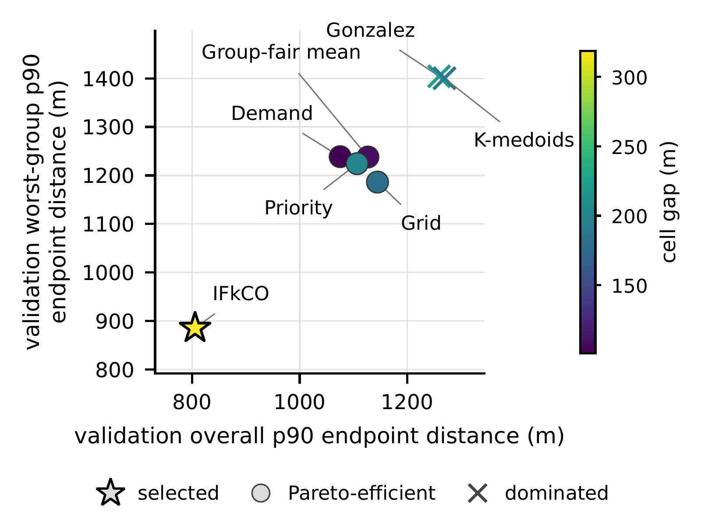
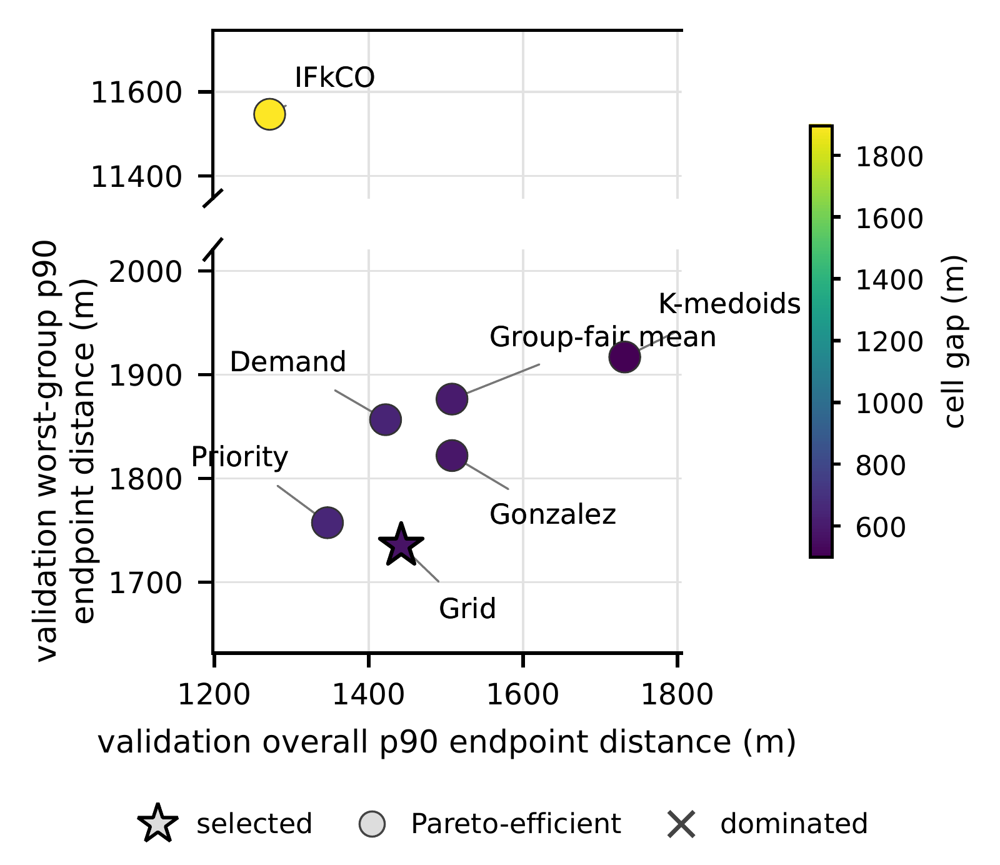

Freeze
Fix target trips, proxy groups, reporting cells, candidate pools and metric priorities before comparing plans.
UrbanAI 2026 · ACM SIGSPATIAL workshop · Accepted / In Press
Auditing Urban Station Plans with Common Evidence
Julian Teusch · Oliver Keszöcze
Compare the plans, not different versions of the evidence. A shared evaluation contract makes station-planning decisions traceable from inputs to the final test report.
A two-point example from the paper
The declared mean ranks S₂ first: 450 m versus 500 m. Lower is better.
Illustrative distances, not city results. Retaining only each plan’s best-served point changes the target: the reported minimum is no longer the declared two-point mean.
The evaluation contract
Fix target trips, proxy groups, reporting cells, candidate pools and metric priorities before comparing plans.
Score all seven generators on common validation evidence. Select by worst-group p90 first, then the declared tie-break metrics.
Record the selected plan before loading test data. Evaluate that plan once, without choosing again on the test results.
Porto and Chicago
The predeclared rule selects IFkCO in Porto and Grid in Chicago. The plots show validation trade-offs; the table reports only the selected plans on held-out test data.

Porto-SES
Selected plan
Selected plans · test endpoint distances (origin + destination access)

Chicago-Hardship
Selected plan
Selected plans · test endpoint distances (origin + destination access)
| Setting | Selected plan | Overall p90 | Worst-group p90 |
|---|---|---|---|
| Porto-SES | IFkCO | 805 m | 872 m |
| Chicago-Hardship | Grid | 1,404 m | 1,656 m |
Chicago’s primary test uses a later time window on the same day. Metric priorities are choices of the authority; selection by point estimates does not establish statistically reliable superiority.
Post hoc sensitivity check
| Setting | 300 candidates · primary | 600 candidates · exploratory |
|---|---|---|
| Porto-SES | IFkCO | Grid |
| Chicago-Hardship | Grid | Priority |
Expanding the candidate set changes the selected generator in both cities. A separate Chicago check that holds the hour fixed across dates selects Priority. These are exploratory checks, not retrospective replacements for the primary analysis.
Scope: auditability within a declared contract, not causal fairness, independently replicated results or stable performance after deployment. Proxy groups, time windows and practical indifference thresholds need explicit justification.
Resources
Julian Teusch and Oliver Keszöcze. Freeze, Validate, Report: Auditing Urban Station Plans with Common Evidence. Accepted at the 4th ACM SIGSPATIAL International Workshop on Advances in Urban-AI (UrbanAI 2026). arXiv:2609.39064.